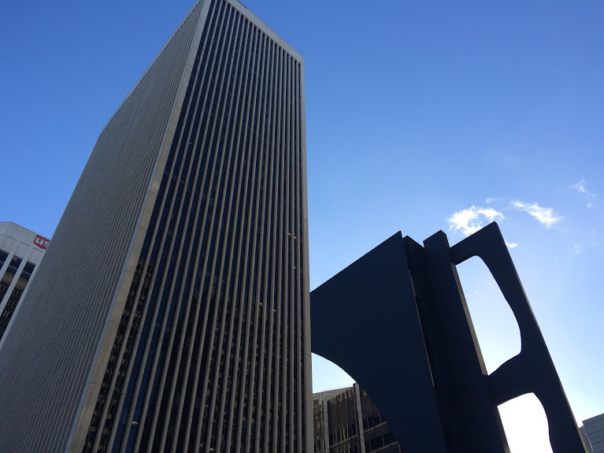
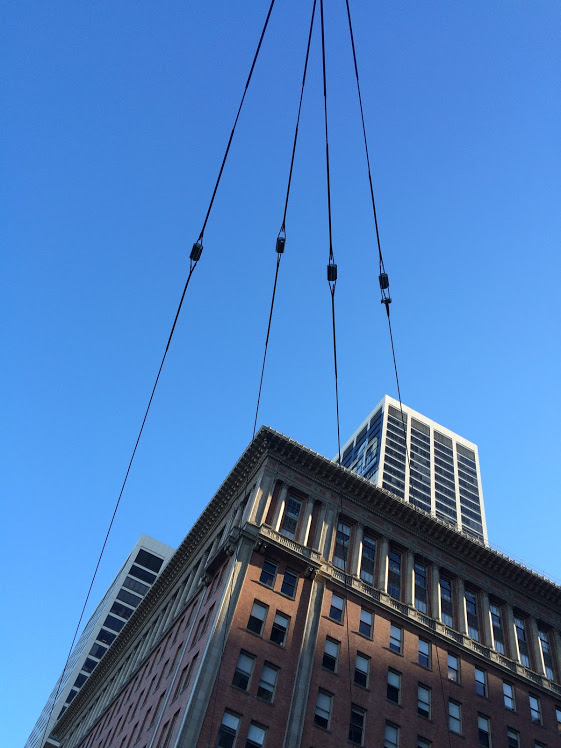
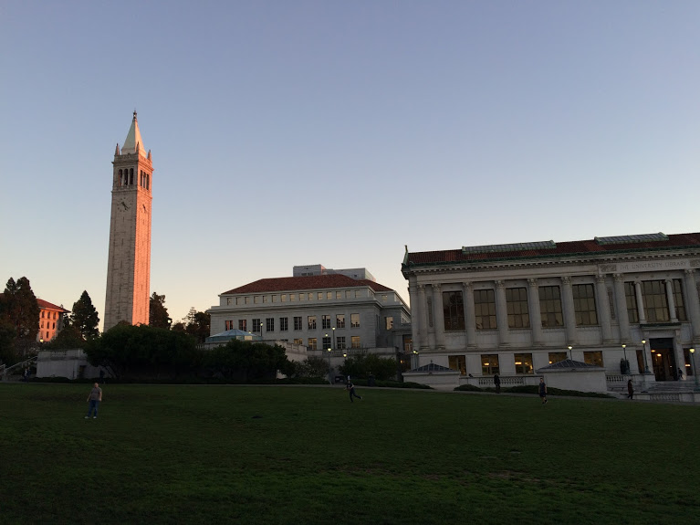
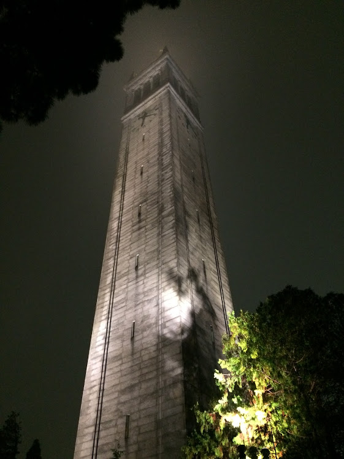
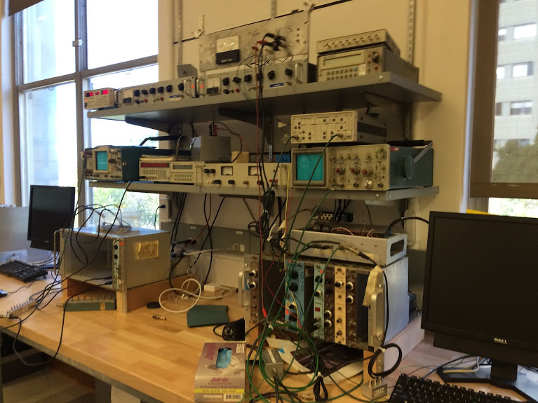

OLIVER CHAUNCEY GORTON
1996 May 14 - Present
This is my webpage. HASHTAGYOLOSWAG.
Here is the time dependent wave equation:
$$ - \frac{\hbar^2}{2m} \nabla^2 \Psi +V\Psi = i\hbar \frac{\partial \Psi}{\partial t} $$
| Occupation: |
Student |
| Major: |
Physics |
| University: |
UC Berkeley |
| Expected graduation date: |
May 2016 |
...
Here are some of my pictures. Copyright (c) 2016.

Location: San Fransico

Location: San Francisco

Location: Memorial Glade, UC Berkeley

Location: UC Berkeley

Location: UC Berkeley, Physics Department
Location: Wheeler Hall, UC Berkeley
Acknowledgements: Repository-Guidance: Sagang Wee